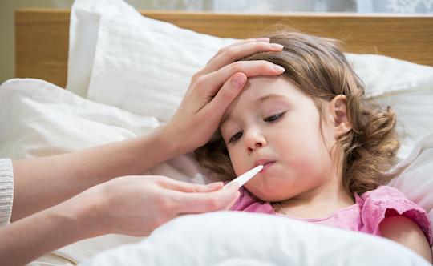

Covid-19
What is Corona Virus?
On December 31st, 2019, the WHO Regional Office in China was informed of cases of pneumonia of unknown cause detected in Wuhan City, Hubei Province of China. On January 7th, 2020, the Chinese authorities announced they had identified a new virus that causes these cases. Coronaviruses (CoV) are a large family of viruses that cause illness ranging from the common cold to more severe diseases such as Middle East Respiratory Syndrome (MERS-CoV) and Severe Acute Respiratory Syndrome (SARS-CoV). The SARS-CoV was transmitted from civet cats to humans in 2002 in China and MERS-CoV from dromedary camels to humans in 2012 in Saudi Arabia. Also, the novel coronavirus (COVID-19) had some link to the seafood and animal market in Wuhan, China. Covid-19 is the new coronavirus and most cases appeared in the Chinese city, Wuhan at the end of December 2019 in the form of acute pneumonia.
Symptoms of Covid-19
Most common symptoms:
Fever
A fever is a temporary increase in your body temperature, often due to an illness. Having a fever is a sign that something out of the ordinary is going on in your body. For an adult, a fever may be uncomfortable, but usually isn't a cause for concern unless it reaches 103 F (39.4 C) or higher. For infants and toddlers, a slightly elevated temperature may indicate a serious infection. Fevers generally go away within a few days. A number of over-the-counter medications lower a fever, but sometimes it's better left untreated. Fever seems to play a key role in helping your body fight off a number of infections.
Dry cough

A cough is a reflex action that clears your airway of irritants and mucus. There are two types of cough: productive and nonproductive. A productive cough produces phlegm or mucus, clearing it from the lungs. A nonproductive cough, also known as a dry cough, doesn’t produce phlegm or mucus. Many things — from allergies to acid reflux — can cause a dry cough. In some cases, there’s no obvious cause. Regardless of the cause, an ongoing dry cough can seriously impact your day-to-day life, especially if it’s worse at night. Dry coughs can be difficult to treat. Once your airways become overly sensitive, they’re easily irritated by coughing, creating a vicious cycle. There are a few things you can do for relief, regardless of what’s causing your cough. Try: Sucking on throat lozenges to moisturize and soothe irritated throat tissue. Taking OTC cough suppressants, such as dextromethorphan (Robitussin), to suppress your cough reflex. Adding honey to a hot drink to soothe irritated throat tissue.
Tiredness
Fatigue is a term used to describe an overall feeling of tiredness or lack of energy. It isn’t the same as simply feeling drowsy or sleepy. When you’re fatigued, you have no motivation and no energy. Being sleepy may be a symptom of fatigue, but it’s not the same thing. Fatigue is a common symptom of many medical conditions that range in severity from mild to serious. It’s also a natural result of some lifestyle choices, such as lack of exercise or poor diet. If your fatigue doesn’t resolve with proper rest and nutrition, or you suspect it’s caused by an underlying physical or mental health condition, see your doctor. They can help diagnose the cause of your fatigue and work with you to treat it. If you’ve made efforts to address the most common lifestyle causes, such as lack of rest, poor eating habits, and stress, without success, and your fatigue has continued for two weeks or more, make an appointment with your doctor.